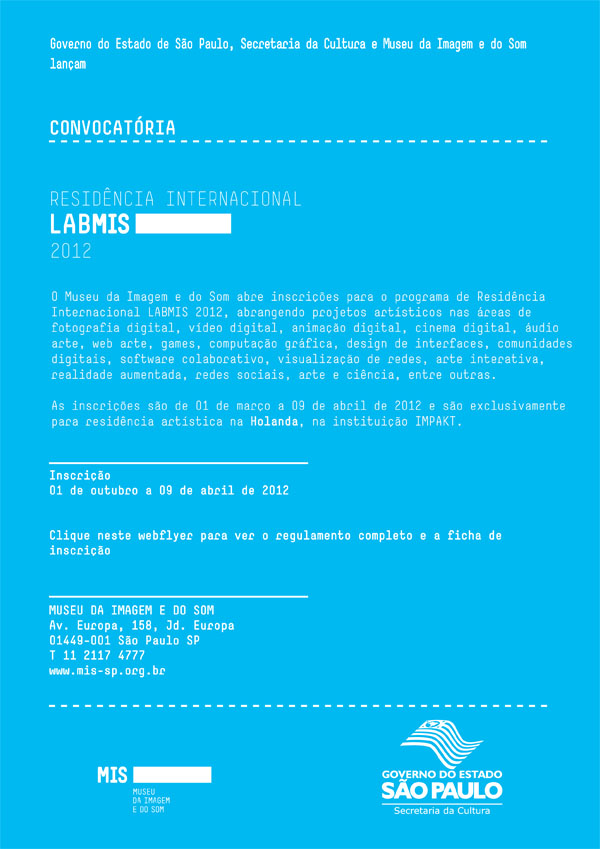

Encerra no dia 09 de abril a chamada para o edital de residências na Holanda, mediada pelo MIS.

No dia 19 de abril é celabrado o dia do índio, e como forma de celebração a OƆA DIGITAL realizará fisicamente no município de Ilhéus/BA e na internet o evento "Há Braços de PAZ". O evento trará atividades colaborativas de arte e ativismo, muitas produções (em copyleft) já encontram-se disponíveis no site. Os interessados em colaborar podem enviar áudios, imagens, vídeos e textos com a temática indígena para o endereço remix@ocadigital.art.br.
Regis Bailux leu o chamado de Pedro Jatobá sobre o OƆA DIGITAL, compartilhou um conteúdo audiovisual diverso que pode ser acessado aqui e documentações em vídeo com os índios pataxós:
Marcelo Braz também compartilhou uma experiência interessante, a ação de uma prefeitura na criação e disponibilização de uma distribuição de Linux em homenagem aos índios Guarus.
Felipe Fonseca perguntou:leia mais >>
Marcelo chegou na lista Metareciclagem em 2004, via Dalton Martins. Ele achou esse registro e compartilhou com a lista, um exercício que pode ser interessante para todxs. A conversa começou assim:
Marcelo: Tudo que está lá descrito pode ser feito aqui no Brasil, é perfeitamente viável. Só é preciso começar, e é isto que venho te propor: criar um projeto piloto para as cinco escolas que hoje compõem o GRUDI com o apoio e ajuda do grupo Metareciclagem.
Dalton: Certamente, esse tipo de ambiente pode ser reproduzido aqui no Brasil. Nesse momento, também estamos trabalhando em parceria com o governo federal em relação ao uso do GESAC, a internet via satélite, para interligar alguns pontos completamente distantes e sem infra-estrutura. Sem dúvida essa idéia de projeto nos interessa e muito.
Marcelo: Preciso entregar um grande relatório detalhado até sexta-feira (23/07), então aguardo a sua resposta o mais breve possível, por gentileza.
Dalton: ok. Em que posso ajudá-lo nesse momento?
E "terminou" com esse email:
Enviadas: Quarta-feira, 21 de Julho de 2004 14:03
Assunto: Re: Reciclagem, Wi-fi e GRUDI
Dalton, para não ficar algo muito impessoal, com esta conversa só por e-mail, podemos nos encontrar pessoalmente nesta semana? Você está em São Paulo ? Eu estarei por aqui até sexta-feira, depois viajarei para Porto Alegre até 31/Julho. Pretendo conhecer a experiência de reciclagem de computadores que eles têm por lá. Talvez você possa me ajudar com isto.
Grande abraço.
Marcelo Bráz
No ano de 2006 a MetaReciclagem recebeu no Prix Ars Electronica, na categoria Comunidades Digitais. Seis anos depois a organização do evento insistiu para que escrevêssemos a rede novamente. Nos últimos dias, Felipe Fonseca, Tati Prado, Mariel Zasso, eu e Adriano Belisário reunimos alguns recortes e perspectivas e acabou que saindo esse texto (ing):
Prix Ars Electronica 2012
Entry in Category: Digital Communites
Project Information
Title of submitted project: MetaReciclagem Network
Year the work was created: 2002
Web Address of the Project: http://rede.metareciclagem.org
Project Details (max. 3.000 characters per question)
Project History:leia mais >>
Mutirão da Gambiarra foi idealizado pela MetaReciclagem

Apoio:


Assine Mutirão da Gambiarra por RSS